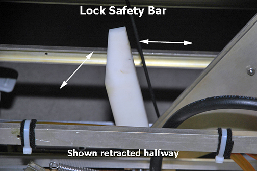
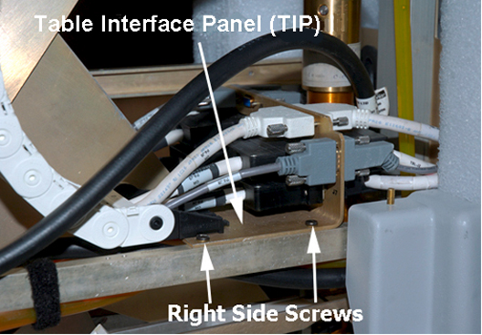
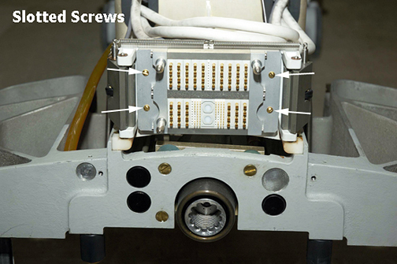
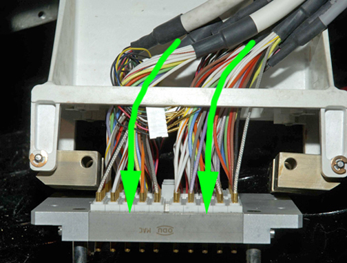
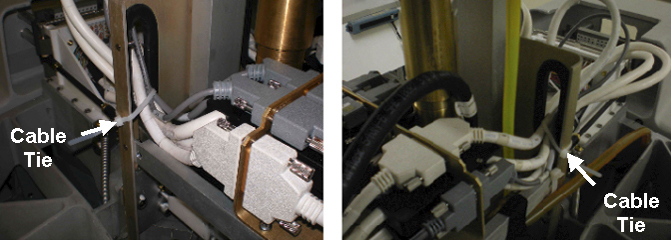
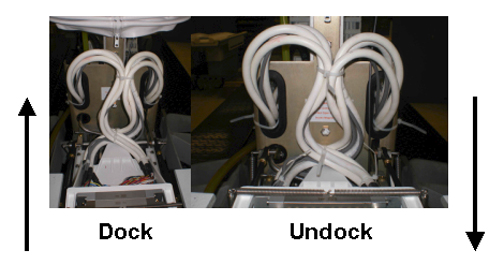
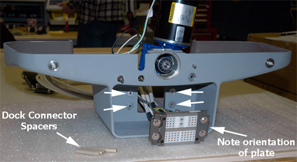
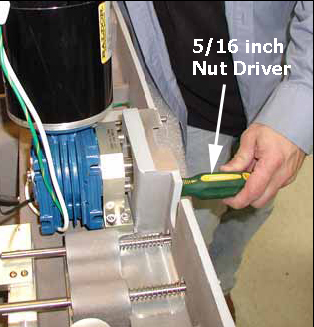
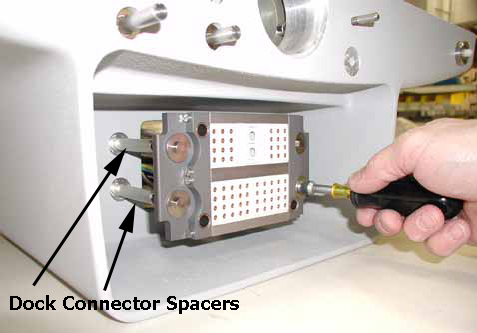
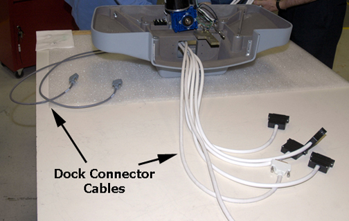

Operating Documentation
Direction 5670000, Rev# 1
Optima MR450w 1.5T Service Methods
Module Version 4.0, Version Date 11/10/09
Operating Documentation |
| Required Persons | Preliminary Reqs | Procedure | Finalization |
|---|---|---|---|
| 2 | 90 minutes |
The Patient Table and Dock each contains a connector plate that when connected, they pass data from the table to the Reroute Box to the RF Hub. A new aspect of DVMR is that the Patient Table now houses two 'P' Port connectors at the rear of the cradle. For signals to flow from the Patient Table to the system, several cables with connecting points are part of the signal path. The most important connection takes place when the Patient Table connects to, or docks, to the magnet via the dock. This document encompasses the replacement of each half of this connection.
When the Patient Table and Dock are connected, data travels between two types of connectors, coax for RF signal and pin/socket for control.
| Item | Qty | Effectivity | Part# | Manufacturer | |
|---|---|---|---|---|---|
| MCRv Tool (3.0T) | 1 | - | 5182417-2 | - | |
| MCRv Tool (1.5T) | 1 | - | 5182417 | - | |
| Non-ferrous Wrench Set | 1 | - | - | - | |
| 5/32 inch Ball-end Hex Key | 1 | - | - | - | |
| 5/16 inch nut driver | 1 | - | - | - | |
| Small, medium, and large Slotted head screwdrivers | 1 each | - | - | - | |
| Small and medium Phillips head screwdrivers | 1 each | - | - | - | |
| Wire Cutter | 1 | - | - | - | |
| Item | Qty | Effectivity | Part# | Manufacturer |
|---|---|---|---|---|
| Loctite 242 Threadlocker, Medium Strength, 0.5CC Tube | 1 | - | - | - |
| Item | Qty | Effectivity | Part# | Manufacturer | |
|---|---|---|---|---|---|
| Self-locking Cable Tie | 5 | - | 46-208758P5 | - | |
| Table side dock connector (Cable, ODU Harness, Table) | 1 | - | See FRU Manual | - | |
| Dock side dock connector (Cable, ODU to Dock IO) | 1 | - | See FRU Manual | - | |
Undock the Patient Table and move it out of the magnet room.
Fasten the Upper Base Cover in the up position and remove the Lower Base Cover. Refer to the Patient Table Upper and Lower Base Cover Removal procedure.
Remove the Front Base Cover.
Lower the table Lock Safety Bar. Lower the table to ensure all weight is resting on the lock bar. (See Illustration 1.)
Illustration 1: Table Lock Safety Bar

Remove two screws on each side of the Table Interface Panel (TIP). Completing this process allows you to move the panel backward giving you more room to access cable connection screws. (See Illustration 2.)
Illustration 2: Table Interface Panel Screws

Remove all cable connections from the front side of the TIP. (See Illustration 3.)
Illustration 3: Front Side Cable Connections

| NOTE: | Use small and medium size standard head screwdrivers to
remove the cable connector screws. CAUTION: Be careful with the large black cable connectors. There are small mounting screws and they can be easily stripped. (See Illustration 4.) |
Illustration 4: Black Cable Connector

Pull the cables through both sides of the table support holes. (See Illustration 5.)
Illustration 5: Cable Path Through Table Support Holes

| ||||
| Behind the Connector Plate, there are two groups of cables, left group and right group. Before you cut the cable tie to remove the cables, pay VERY CLOSE ATTENTION to how the cables are coiled and tied. The coiling allows the cable bundle to expand and contract as the Table Frame Connector assembly moves forward (dock) and backward (undock). When installing the replacement assembly, it is imperative you coil the cables identically according to specification for the assembly to move forward and backward on its track. | ||||
Cut the cable tie holding the bundled cables together behind the Connector Plate. (See Illustration 6.)
Illustration 6: Cable Tie Locations

To remove the Table Connector Plate, do the following:
Use a slotted screwdriver to remove four screws from the face of the Connector Plate. (See Illustration 7.)
Illustration 7: Front of Connector Plate

To remove the plate and cables, guide the Connector Plate forward with one hand while feeding the cables through the opening in the frame assembly. (See Illustration 8.)
Illustration 8: Top View of Table Frame Assembly

Feed the cables through the opening in the frame assembly, and then lay them out to one side while holding the plate in place at the front of the frame assembly.
Replace the four slotted screws on the face of the plate.
Separate cables by port sides and install, without fully tightening, 3 cable ties. Tie strap ends of cable groupings on the left side, right side and front of connector. (See Illustration 9.) Keep cable for interlock behind cables.
Illustration 9: Cable Separation

| ||||
| Potential Equipment Damage! | ||||
| Be careful with the large black cable connectors. | ||||
| There are small mounting screws and they can be easily stripped. |
To route the cables through the table support holes, first take the right side cables and create a single loop, then feed the cables through the right side table support hole and reconnect them to the front side of the TIP. Make sure the Table Top Interlock able is behind cable loop. Repeat the process for the left side cables. (See Illustration 5.)
| NOTE: | DO NOT CABLE TIE THE CABLE BUNDLES YET! Wait until after you have checked the slack for each coiled bundle. |
Replace both screws on each side of the TIP.
Once connection is made, secure cable ties for proper strain relief of the cables. (See Illustration 10.) Trim cable ties as necessary.
Illustration 10: Secure Cables with Cable Ties

Lift the cable loops and install cable tie. (See Illustration 6.) Trim as required.
Carefully and manually push the frame assembly back into its retracted position while visually inspecting the coiled cable bundles to ensure they maintain their loop with no interference. Repeat the process of manually moving the frame assembly forward and back to confirm integrity of coiled cable bundles. (See Illustration 11.)
Illustration 11: Docked and Undocked Position of Frame Assembly

Raise the table, and then move the table Lock Safety Bar to the up position. (See Illustration 1.)
Replace the Front, Upper and Lower Base Covers.
Move the table back into the magnet room and redock the Patient Table.
Go to Finalization.
Undock the Patient Table and move it away from the magnet.
| NOTE: | The right skirt is no longer available. Some systems will not have the right skirt. |
On the magnet, remove the right (if present) and left side skirt cover. For more information, see the Skirt Cover Removal and Install procedure.
Disconnect all dock cables from the left side of the I/O panel and rear pedestal.
| NOTE: | Disconnecting all cables from the dock to the magnet ensures maximum safety, especially when you disconnect the power cable. In addition, this procedure requires that you move the dock out of the magnet room, even though you are only changing the Dock Connector Plate assembly cables. |
| ||||
| back injury | ||||
| dock is heavy, weighing more than 50 lbs. | ||||
| two people are necessary to move dock out of magnet room to perform maintenance. |
| ||||
| FERROUS PROJECTILE!! | ||||
| DOCK CONTAINS STEEL COMPONENTS. | ||||
| IMPERATIVE THAT YOU MOVE THE DOCK OUT OF THE MAGNET ROOM TO DISASSEMBLE AND PERFORM MAINTENANCE. |
At rear of the dock, use a 3/4 inch non-ferrous wrench to remove four (4) nuts (2 on each side) from dock bracket bolts. (See Illustration 12.)
Illustration 12: Side View of Dock

| ||||
| Back injury | ||||
| dock is heavy, weighing more than 50 lbs. | ||||
| two field engineers are necessary to move dock out of magnet room to perform maintenance. |
| ||||
| possible personal injury | ||||
| THIS PROCEDURE REQUIRES REMOVAL OF FERROUS MATERIAL IN CLOSE PROXIMITY TO THE MAGNET. | ||||
| two Field engineers are required at all times. |
Using two people, remove the dock from the magnet room.
With two field engineers, one holding each side of the dock, slide the dock away from the magnet front to where the foot of the Patient Table would normally be located.
When a safe distance away from the magnetic field is achieved (at least as far as the foot end of the patient table), two field engineers may slowly lift the dock from the floor and exit the room.
Using a 3/4 inch wrench, remove four bolts (2 on each side) to unfasten the dock cover from the dock base. (See Illustration 12.)
| NOTE: | Ensure to disconnect the switch connector when removing deck cover. |
Turn the dock cover upside down. (See Illustration 13.)
| NOTE: | Be careful that you do not scratch the top of the cover. Lay down a cloth before setting it on the floor. |
Illustration 13: Dock Cover Upside Down View

Using a 5/16 inch nut driver, remove four nuts from the front of the Connector plate. (See Illustration 14.)
Illustration 14: Top view of Dock

Keep the Dock Connector Spacers in place attached to the dock. (See Illustration 15.)
Illustration 15: Dock Connector Spacers Intact

Route the cables through the opening inside the dock cover to remove Dock Connector Plate assembly.
First route large (4) black connectors (two at a time) through the opening in the dock cover, followed by (2) large white connectors, and then the remaining (2) gray cables. (See Illustration 16.)
Illustration 16: Dock Connector Cables

Reattach the Dock Connector Plate to the Connector Spacers on the front of the dock, paying attention to the correct orientation of the plate. (See Illustration 15.)
| NOTE: | Hold dock spacer screws in place while tightening the Dock Connector Plate to the Dock Connector Spacers. Apply the torque to the driver only, using care not to over-torque to prevent damage to the M4 Dock Connector bolts as they can shear easily. (See Illustration 14.) |
Carefully turn dock cover right side up, reconnect the dock switch connector, and place dock back on dock base. Reattach dock bolts. (See Illustration 12.)
| ||||
| POSSIBLE PERSONAL INJURY! | ||||
| THIS PROCEDURE REQUIRES REMOVAL OF FERROUS MATERIAL IN CLOSE PROXIMITY TO THE MAGNET. | ||||
| two Field engineers are required at all times. |
Move dock back into magnet room.
With two field engineers, one holding each side of the dock, enter the magnet room and place the dock on the floor where the foot of the patient table would normally be located.
With two field engineers, one applying vertical downward pressure to each side of the dock, slide the dock toward the magnet front.
Reconnect dock to Dock Brackets. (See Illustration 12.)
Reconnect all dock cables to the I/O panel (left side) and the rear pedestal. If the system has an I/O panel on the right side of the magnet, remove bracket and corresponding cables routing to the rear pedestal. These parts can be disposed of since the new cables on the new cable assembly will route directly to the rear pedestal.
Replace magnet skirt covers.
Dock the Patient Table. Go to Finalization.
Run the Coil Datapath Diagnostics procedure on all P and A coil connectors to validate successful cable signal flow.
Check dock up functionality.